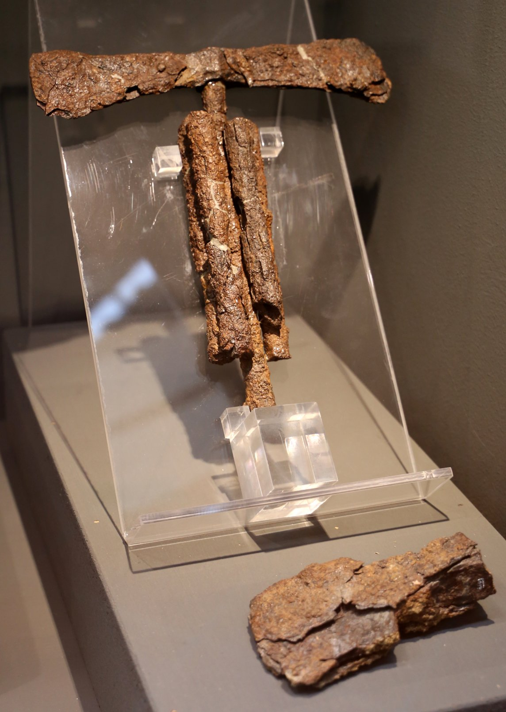

Exploring the Past in the Present: The Fasces
Etruscans’ most lasting legacy
One of the Etruscans’ most lasting legacy and common cultural symbol still used widely worldwide, is the fasces, a bundle of wooden rods bound together by leather straps with an axe head.

Double-headed axe of a high dignitary, from the Tomb of the Lictor, Vetulonia (c. 610 BC). Museo Archeologico Nazionale, Florence. Photo: Sailko, CC BY 3.0 (https://creativecommons.org/licenses/by/3.0/), via Wikimedia Commons.
Prepare
What are the fasces and where can we see them today?
Read Brennan’s article in the Further Reading Options to explore how widespread this symbol is today.
How did this relatively unassuming symbol from the Etruscans become associated with ancient Rome?
Writing in the first century BCE, Greek author Dionysius of Halicarnassus provides an account of how Tarquinius Priscus brought several key symbols and objects into the Roman orbit as signs of political power, including the fasces.
Let’s pick up the story as Tarquinius Priscus defeats other Etruscans (known in the text as Tyrrhenians) after a nine-year war, somewhere towards the end of the seventh century BCE.
Read
Dionysius of Halicarnassus, Roman Antiquities [Rhōmaikē Archaiologia], III, 59, 62.
[The Roman antiquities of Dionysius of Halicarnassus, with an English translation by Earnest Cary, Ph. D., on the basis of the version of Edward Spelman, vol. 2 (Cambridge, Mass., William Heinemann, 1937), pp. 219–25.]
Reflect
If Rome took its symbols of power from the Etruscans, what might it suggest about the relative power of these two cultures?
How important did Roman authors think Tarquinius Priscus’ Etruscan origins were to his power and authority as a Roman king?
What else did the Etruscans gift to ancient Rome and beyond?
Scholars largely see the origins of the Latin alphabet as Etruscan. If you’d like to discover more about this topic, look at Ullman (1927) and Gordon (1969) in the Further Reading Options below.
Read
On the meaning of the fasces in the ancient Roman world, see:
Anthony J. Marshall, ‘Symbols and Showmanship in Roman Public Life: The Fasces,’ Phoenix 38, 2 (1984): 120–41.
https://doi.org/10.2307/1088896
https://www.jstor.org/stable/1088896
[This article is available to read free online with an account]
To explore how widespread this symbol is today, see:
T. Corey Brennan, ‘The Fasces: Ancient Rome’s Most Dangerous Political Symbol,
Antigone Journal (2023): https://antigonejournal.com/2023/07/roman-fasces
To find out more about the origins of the Latin alphabet, see:
B.L. Ullman, ‘The Etruscan Origin of the Roman Alphabet and the Names of the Letters,’ Classical Philology 22, 4 (1927): 372–77.
https://www.jstor.org/stable/262978 [Available open access]
Arthur E. Gordon, ‘On the Origins of the Latin Alphabet: Modern Views,’ California Studies in Classical Antiquity 2 (1969): 157–70.
https://doi.org/10.2307/25010586
https://www.jstor.org/stable/25010586
[This article is available to read free online with an account]